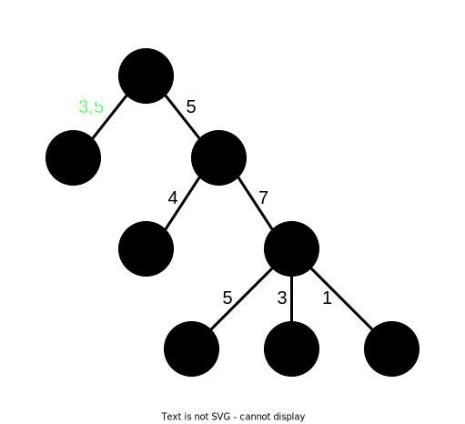
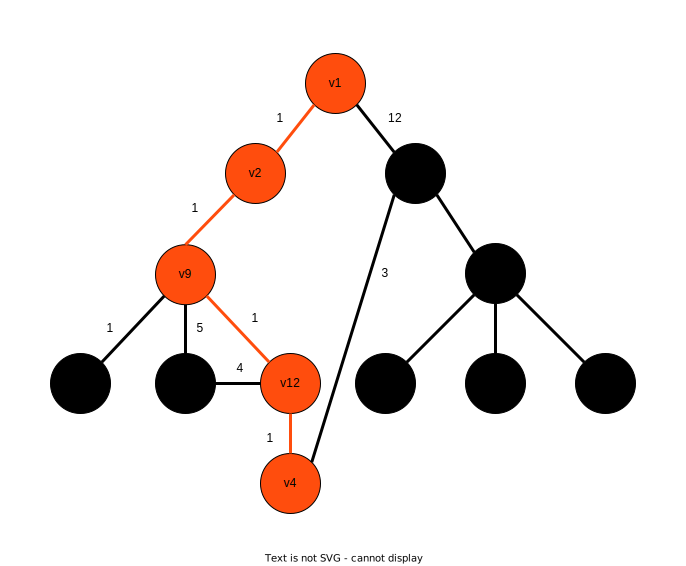

и представляется упорядоченной парой (u, v), узел u называется начальным, узел v — конечным.
и представляется упорядоченной парой (u, v), узел u называется начальным, узел v — конечным.Нахождение кратчайшего пути в графе. Алгоритмы нахождения самого короткого пути в графе между двум точками (вершинами), в котором находится минимальная сумма весов (рёбер), а также представлены алгоритмы не только для взвешенных графов. В статье дана общая концепция алгоритмов и примеры их реализации.
В статье описаны разные типы графов и универсильный способ нахождения кратчайшего пути в этом типе графа метожом грубой силы, т.е. алгоритмы нахождения самого короткого пути в графе между двум точками (вершинами, узлами).
Граф состоит из точек (узлов) (V, Vertex) и рёбер (E, Edge), соединяющих вершины. Вот пример графа:

Рис. 1. Пример графа.
Направленный граф или ориентированный граф имеет помимо структуры обычного графа направление, у ребра соединяющего вершины. У ориентированного графа эти рёбра называются дугами. Он бывает однонаправленный и двунаправленный. Однонаправленным называется граф, содержащий одно направление перехода от одной вершины к другой. Ребра двунаправленного графа содержат одно направление перехода или возможность перехода в обе стороны.
Вот пример однонаправленного графа:

Рис. 2. Пример однонаправленного графа.
Далее приведёт пример двунаправленного графа:

Рис. 3. Пример двунаправленного графа.
Взвешенны граф — это граф, у которого у рёбер есть вес соединения вершин W.
Рис. 4. Пример взвешенного графа.
Взвешенно-ориентированный (взвешенно-направленый) — это граф, имеющий помимо вершин, рёбер и направлений ещё и вес направленного ребра.
Вот пример однонаправленного взвешенного графа:
Рис. 5. Пример однонаправленного взвешенного графа.
Далее приведёт пример двунаправленного взвешенного графа:

Рис. 6. Пример двунаправленного взвешенного графа.
Бинарный граф — это граф, у которого одна вершина имеет два ребра.
Пример:
Рис. 7. Пример бинарного графа.
Он тоже может быть взвешенным, направленным (ориентированным), двунаправленным (ориентированным в обе стороны).
Дерево — это граф, у которого между двумя любыми вершинами есть маршрут и нет циклических связей между вершинами. Если удалить любой узел дерева, то это нарушит его связанность.
Термины деревьев:
Лес — это множество деревьев.
Пример:

Рис. 8. Пример дерева.
Пример графа, не являющегося деревом, с циклическими связями:

Рис. 9. Граф, не являющейся деревом, с циклическими связями.
Свойства деревьев:
Подытожим описанное ранее и дадим дополнение.
Граф — это математическая модель объектов реальной природы, которые имеют между собой связи. Каждый раф G состоит из набора узлов V (Vertex) и набора направленных рёбер E (Edge).
Каждое ребро и представляется упорядоченной парой (u, v), узел u называется начальным, узел v — конечным.
Виды графов (рассмотренные ранее):
Виды графов (дополнение):
Граф может иметь совмещённые виды, допустим, взвешенно-направленый или бинарное дерево.
Областей применения графов довольно много: в логистике и транспорте, для описания маршрутов; в интернете, для создания индекса цитирования; в социологии/в социальных сетях, для установления связей между людьми и т.д.
Основной задачей работы с графами является обход узлов, связанных рёбрами. Не направленный граф называется связанным, если из каждой пары узлов u и v существует путь из u в v. Для направленных графов определение даётся по другому: направленный граф называется сильно связанным, если для кажой пары узлов u, v существует путь из u в v, и путь из v в u. Для ненаправленных графов, кратчайший путь между двумя узлами ex и ey определяется, как минимальное количество ребёр в пути u-v. Граф называется взвешанным, если для каждого ребра v и/или u есть вес w перехода по этому ребру. Кратчайшим путём для взвешенного графа называется путь с минимальной суммой весов wi ребёр в пути u-v.
На следующем графе рассмотрим концепции обхода графов:
Рис. 10. Граф для обхода.
Далее рассмотрим на этом графе концепцию обхода графа в ширину и глубину. Эти алгоритмы нужны для проверки связанности ненаправленных графов, есть и другие применения.
Алгоритм поиска в ширину (англ. breadth-first search, BFS) — позволяет просмотреть все вершины графа.
Рассмотрим последовательность обхода графа:

Рис. 11. Последовательность обхода поиском в ширину.
Алгоритм поиска в глубину (англ. depth-first search, DFS) — один из методов обхода графа. Стратегия поиска в глубину, как и следует из названия, состоит в том, чтобы идти «вглубь» графа, насколько это возможно.

Рис. 12. Последовательность обхода поиском в глубину.
Далее рассматривается алгоритм нахождения кратчайшего пути в графе методом грубой силы.
Для начала рассмотрим, что такое кратчайший путь в графе.
Путь строиться путь от начального узла до конечного, что является входными данными (начальный и конечный узел). Кратчайший путь в ызвешенном графе называется путь с наименьшим количеством рёбер от начального узла до конечного.
Рассмотрим пример кратчайшего пути в графе:

Рис. 13. Кратчайший путь в графе.
Кратчайшим путём в взвешенном графе является путь с наименьшей суммой весов рёбер.
Рассмотрим пример кратчайшего пути в взвешенном графе:
Рис. 14. Кратчайший путь в взвешенном графе.
Кратчайший путь в ориентированном графе — это достижимый путь с наименьшим количеством рёбер.
Кратчайший путь в взвешенном ориетированном графе — это достижимый путь с наименьшей суммой весов рёбер.
Рассмотрим пример кратчайшего пути в взвешенном ориентированном графе:

Рис. 15. Кратчайший путь в взвешенном ориентированном графе.
Далее описан алгоритм нахождения кратчайшего пути в графе на основе поиска всех ациклических путей методом грубой силы:
Этим алгоритмом можно искать пути в обычном графе, взвешенном и направленном.
Приведённый метод возвращает все ациклические пути и их вес. Достаточно выбрать путь с наименьшим весом. Этот алгоритм основан на методе с грубой силой (просмотре всех возможных ациклических путей и выбора наименьшего).
Концепция состоит в том, чтобы обойти все возможные ациклические маршруты и сохранить для каждого найденного вес, потом найти минимальный вес:

Анимация 1. Обход всех путей графа.
В статье были рассмотрены следующие темы: описание графов, типы графов, введение по графовым алгоритмам, алгоритм нахождения кратчайшего пути в графе. Это послужит точкой входа в Ваши познания о графах.